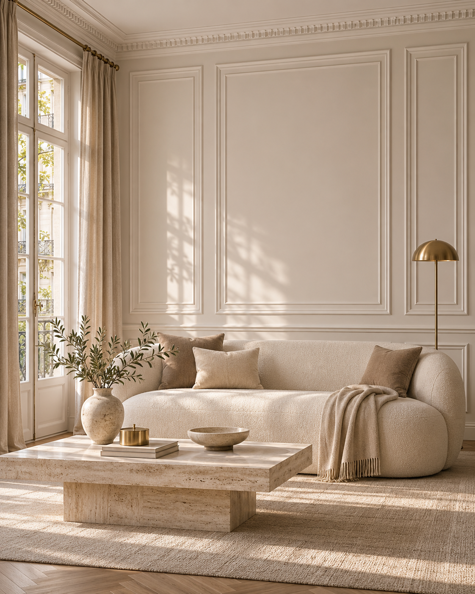

Living modern clasic în ivoire
Imagine conceptuală de inspirație
Descarcă originalul ↗
Brief de generare
Use case: ads-marketing. Create ONE premium photorealistic interior architectural campaign image for Deco&Flair's reusable inspiration library. Scene: a serene modern-classic living room in warm ivory and taupe, fine white wall moulding frames, a subtly detailed ceiling cornice and tall windows, a sculptural cream sofa, travertine coffee table, natural linen curtains. The decorative wall profiles are the visual hero: realistic consistent mitred joins and believable scale. Photograph as a luxury European interiors editorial, tactile materials, soft angled morning daylight, restrained brass accents, refined uncluttered styling, straight verticals, full-frame architectural camera. Portrait 4:5 composition, clearly readable on a Facebook feed with a calm area for future copy. No words, no prices, no logo, no watermark, no people, no collage. This is a conceptual inspiration scene, not a claim about an installed SKU.